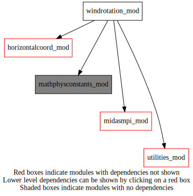
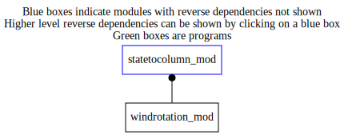

Dependency Diagrams:
 Direct Dependency Diagram¶
 Reverse Dependency Diagram¶
Description
MODULE windRotation (prefix=’uvr’ category=’4. Data Object transformations’)
- Purpose
To transform winds FROM the rotated spherical coordinate system TO the non-rotated spherical coordinate system.
Quick access
- Types
- Variables
- Routines
carall(),mxma8x(),mxv(),sugrdpar(),uvr_rotatelatlon(),uvr_rotatewind_ad(),uvr_rotatewind_nl(),uvr_rotatewind_tl(),uvr_setup(),vllacar()Needed modules
mathphysconstants_mod: MODULE MathPhysConstants_mod (prefix=’mpc’ category=’8. Low-level utilities and constants’)
horizontalcoord_mod: MODULE HorizontalCoord_mod (prefix=’hco’ category=’7. Low-level data objects’)
utilities_mod: MODULE utilities_mod (prefix=’utl’ category=’8. Low-level utilities and constants’)
midasmpi_mod: MODULE midasMpi_mod (prefix=’mmpi’ category=’8. Low-level utilities and constants’)Types
- type windrotation_mod/unknown_type¶
- Type fields
% grd_rot_8 (msize,msize,maxnumsubgrid) [real ]
% grd_rotinv_8 (msize,msize,maxnumsubgrid) [real ]
% initialized [logical ]
Variables
- windrotation_mod/struct_uvr [public]¶
Public derived type definition
Subroutines and functions
- subroutine windrotation_mod/uvr_setup(uvr, hco_in)¶
- Purpose
Setup the information for wind rotation
- Arguments
uvr [struct_uvr ,pointer] :: ‘)
hco_in [struct_hco ,in] :: Horizontal grid object
- Called from
- Call to
- subroutine windrotation_mod/sugrdpar(uvr, subgridindex, grd_xlon1, grd_xlat1, grd_xlon2, grd_xlat2)¶
- Purpose
Compute the rotation matrix (r_8) that allows transformation from the non-rotated to the rotated spherical coordinate system.
- Arguments
uvr [struct_uvr ,pointer] :: Wind rotation object
subgridindex [integer ] :: Horizontal subGrid index = 2
grd_xlon1 [real ,in] :: Horizontal grid xlon1_yan
grd_xlat1 [real ,in] :: Horizontal grid xlat1_yan
grd_xlon2 [real ,in] :: Horizontal grid xlon2_yan
grd_xlat2 [real ,in] :: Horizontal grid xlat2_yan
- Called from
- Call to
- subroutine windrotation_mod/vllacar(f_xyz_8, f_lon, f_lat)¶
- Purpose
Compute parameters of rotated grid
- Arguments
f_xyz_8 (msize) [real ,out] :: output
f_lon [real ,in] :: Input in degrees
f_lat [real ,in] :: Input in degrees
- Called from
- subroutine windrotation_mod/mxma8x(pmat3, pmat1, pmat2, kdimi1, kdimj1, kdimj2)¶
- Purpose
Compute a product of two matrices.
- Arguments
pmat3 (kdimi1,kdimj2) [real ] :: output
pmat1 (kdimi1,kdimj1) [real ] :: input matrix one
pmat2 (kdimj1,kdimj2) [real ] :: input matrix two
kdimi1 [integer ] :: first dimension of the first matrix
kdimj1 [integer ] :: second dimension of the first matrix
kdimj2 [integer ] :: second dimension of the second matrix
- Called from
- subroutine windrotation_mod/uvr_rotatewind_nl(uvr, subgridindex, uwind, vwind, lat, lon, latrot, lonrot, mode)¶
- Purpose
Go from tangential wind components from one sphere to another (same origin!). Original ezsint version used for computing innovation.
- Arguments
uvr [struct_uvr ,pointer] :: Wind rotation object
subgridindex [integer ,in] :: Current subgrid index
uwind [real ,inout] :: interpUU
vwind [real ,inout] :: interpVV
lat [real ,in] :: Latitude in radians
lon [real ,in] :: Longitude in radians
latrot [real ,in] :: Rotated latitude in radians
lonrot [real ,in] :: Rotated longitude in radians
mode [character ,in] :: ToMetWind or ToRotWind
- Called from
- Call to
- subroutine windrotation_mod/uvr_rotatewind_tl(uvr, subgridindex, uwind, vwind, lat_in, lon_in, latrot_in, lonrot_in, mode)¶
- Purpose
Go from tangential wind components from one sphere to another (same origin!). Fast version used by Variational analysis.
- Arguments
uvr [struct_uvr ,pointer] :: Wind rotation object
subgridindex [integer ,in] :: IN
uwind [real ,inout] :: interpUU
vwind [real ,inout] :: interpVV
lat_in [real ,in] :: Latitude in radians
lon_in [real ,in] :: Longitude in radians
latrot_in [real ,in] :: Rotated latitude in radians
lonrot_in [real ,in] :: Rotated longitude in radians
mode [character ,in] :: ToMetWind or ToRotWind
- Called from
- Call to
- subroutine windrotation_mod/uvr_rotatewind_ad(uvr, subgridindex, uwind, vwind, lat_in, lon_in, latrot_in, lonrot_in, mode)¶
- Purpose
Adjoint of : Go from tangential wind components from one sphere to another (same origin!). Fast version used by Variational analysis.
- Arguments
uvr [struct_uvr ,pointer] :: Wind rotation object
subgridindex [integer ,in] :: IN
uwind [real ,inout] :: interpUU
vwind [real ,inout] :: interpVV
lat_in [real ,in] :: Latitude in radians
lon_in [real ,in] :: Longitude in radians
latrot_in [real ,in] :: Rotated latitude in radians
lonrot_in [real ,in] :: Rotated longitude in radians
mode [character ,in] :: ToMetWind or ToRotWind
- Called from
- Call to
- subroutine windrotation_mod/uvr_rotatelatlon(uvr, subgridindex, latout, lonout, latin, lonin, mode)¶
- Purpose
Go from (lat,lon) of one Cartesian frame to (lat,lon) of another Cartesian frame given the rotation matrix.
- Arguments
uvr [struct_uvr ,pointer] :: Wind rotation object
subgridindex [integer ,in] :: Current subgrid index
latout [real ,out] :: Output latitude in radians
lonout [real ,out] :: Output longitude in radians
latin [real ,in] :: Input latitude in radians
lonin [real ,in] :: Input longitude in radians
mode [character ,in] :: ToLatLonRot or ToLatLon
- Called from
s2c_setupinterpinfo(),uvr_rotatewind_tl(),uvr_rotatewind_ad()- Call to
- subroutine windrotation_mod/carall(plon, plat, pcart)¶
- Purpose
Returns (lat,lon) (degrees) of an input Cartesian position vector on the unit sphere.
- Arguments
plon [real ,out] :: output longitude
plat [real ,out] :: output latitude
pcart (msize) [real ,in] :: input Cartesian vector
- Called from
- subroutine windrotation_mod/mxv(pvec2, pmat, pvec1, kdimi, kdimj)¶
- Purpose
Compute a product : matrix times vector.
- Arguments
pvec2 (kdimi) [real ] :: output vector
pmat (kdimi,kdimj) [real ] :: input matrix
pvec1 (kdimj) [real ] :: input vector
kdimi [integer ] :: first dimension
kdimj [integer ] :: second dimension
- Called from
{kind=link}
{kind=link}